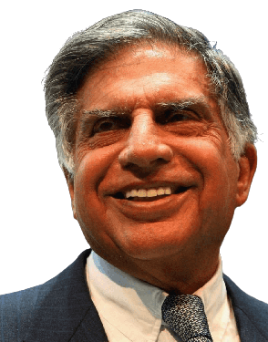

Rata Tata

ABOUT THE LEGEND
Ratan Tata is widely admired for various qualities and accomplishments throughout his career. Here are some valuable and admiring points about him:
- Leadership and Vision: Ratan Tata is celebrated for his visionary leadership and his ability to steer the Tata Group through challenging times while maintaining its commitment to innovation, integrity, and social responsibility.
- Business Acumen: He is recognized for his astute business acumen, which allowed the Tata Group to expand globally and diversify into various industries, including steel, automobiles, telecommunications, and more.
- Commitment to Innovation: Ratan Tata's commitment to innovation is evident in the Tata Nano project, an ambitious endeavor to create an affordable and safer car for the masses, which showcased his determination to address societal challenges.
- Global Expansion: Under his leadership, the Tata Group made strategic international acquisitions, such as Jaguar Land Rover and Corus Group, which bolstered the conglomerate's global presence.
- Ethical Leadership: He is admired for his unwavering commitment to ethical business practices and corporate social responsibility, which has been a hallmark of the Tata Group under his stewardship.
- Philanthropy: Ratan Tata's dedication to philanthropy and his involvement in various social and developmental initiatives have positively impacted numerous communities in India, particularly in the fields of healthcare, education, and rural development.
- Resilience: Ratan Tata's leadership during challenging periods, including economic downturns and corporate crises, demonstrated his resilience and ability to make tough decisions for the long-term benefit of the Tata Group.
- Recognition and Honors: He has received numerous prestigious awards and honors, including civilian awards from the Government of India, for his contributions to business, industry, and society.
- Inspiration: Ratan Tata serves as an inspiration to many aspiring entrepreneurs and business leaders in India and around the world, motivating them to pursue excellence, ethics, and innovation in their own endeavors.
- Legacy: His legacy is marked by the enduring success and reputation of the Tata Group as a socially responsible and globally respected conglomerate.